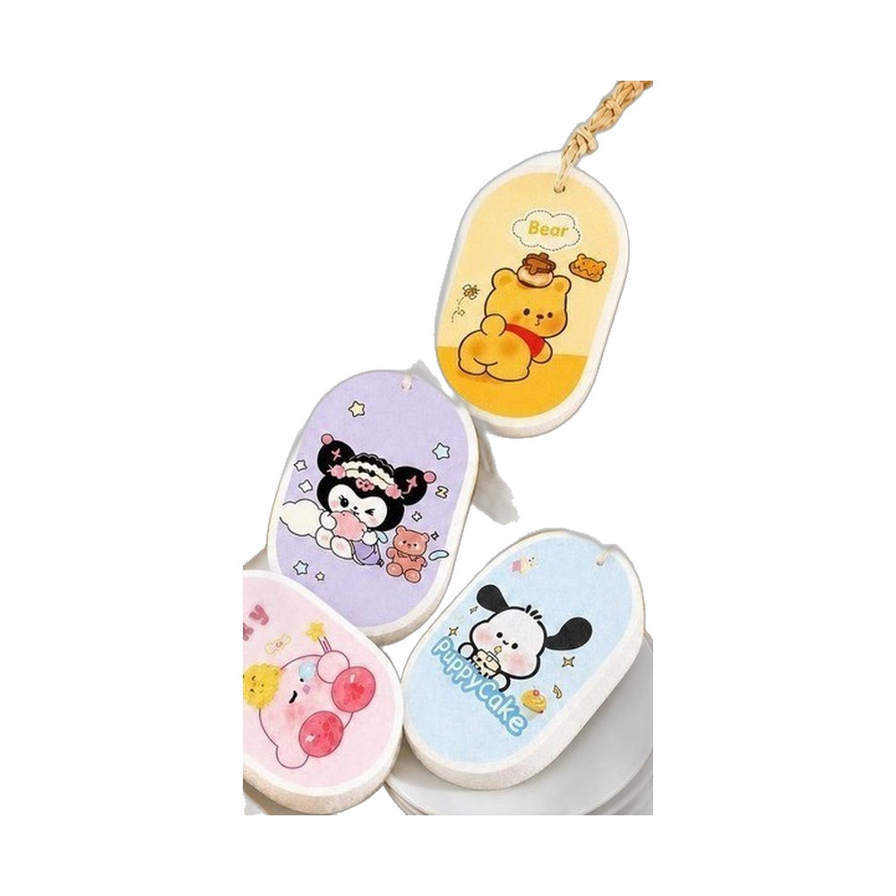

Mút rửa chén bát ăn dặm dạng nén Hogokids
Bột gỗ tự nhiên · Nén mỏng, nở khi gặp nước
Miếng mút dạng nén làm từ bột gỗ tự nhiên, nở mềm ngay khi gặp nước. Mẹ dùng rửa bát, cốc, đồ ăn dặm của bé hằng ngày, mặt mút mềm nên không làm xước đồ dùng. In hình hoạt hình đáng yêu, đóng gói nhỏ gọn.
| Chất liệu | Bột gỗ tự nhiên dạng nén. |
|---|---|
| Công dụng | Rửa bát, cốc, nồi, đồ dùng ăn dặm của bé. |
| Thiết kế | Hình hoạt hình dễ thương, nhiều mẫu. |
Điểm nổi bật
- Nén mỏng, gọn, nở mềm khi gặp nước
- Mềm, không làm trầy xước đồ dùng của bé
- Giá trị nhỏ, khách mua theo combo và quay lại thường xuyên